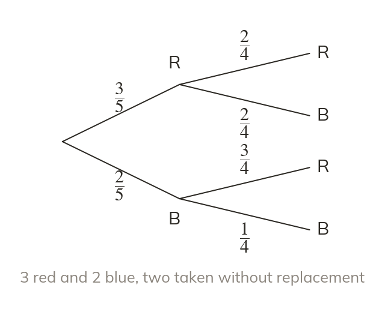
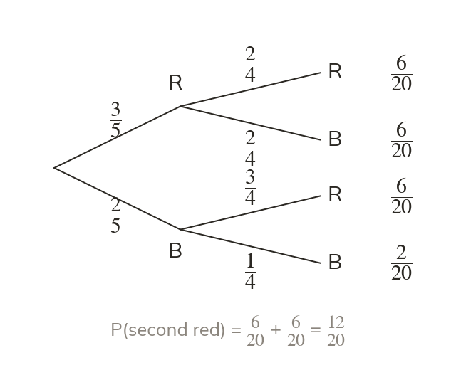
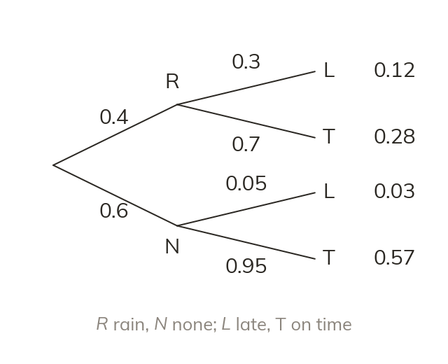
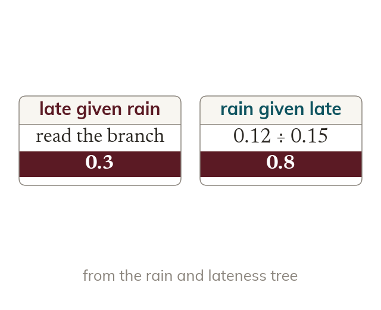

Topic 11H.4 · Conditional and Algebraic Probability · Lesson 3 of 6
Conditional Probability on Trees
Screening tests, quality checks and the weather chain one uncertain event onto another. A tree diagram records each second event given the first, so conditional probability is already sitting on its branches.
By the end you’ll know…
On a tree diagram the second set of branches carries conditional probabilities: each is the probability of the second event GIVEN the branch it follows.
Multiplying along a path gives and given
adds every path that ends in
Reading a tree backwards, given and which is not on any branch.
Without replacement the second-stage branches change, which is the commonest source of a conditional tree.
By the end you can
G7Find conditional probabilities from a tree diagram.
G7Work backwards on a tree diagram to find a reversed conditional probability, such as P(rain given late).
Work down the page at your own pace. Write every answer in your book first, then click to check it.
01
Do Now
About 5 minutes
1
P(rain) Find P(no rain).
2
P(win) for each game, independently. Find P(wins both of two games).
3
A bag has red and blue counters. Two are taken without replacement. Find P(red then blue).
4
Using the same bag, find P(both red).
Remember these?
LAST LESSONA Venn diagram has ∈ only, in both, ∈ only and in neither. Find given
LAST WEEKShow that simplifies to
LAST TERMA right-angled triangle has an angle of with opposite side cm. Find the hypotenuse to s.f.
cm
LAST YEARSolve and list the positive integer solutions.
so
02
Learn
Read each card, then follow the worked examples one step at a time.

The second branches are 'given'
Each second branch is a probability given the first. Multiply along a path for P(both).
On a tree diagram each second-stage branch is a probability GIVEN the branch it follows. So P(second red given first red) is read straight off a branch, and multiplying along the path gives P(both red).

Add every path that ends in it
P(second red) adds every path ending in red. Each path is an 'and'; together they are an 'or'.
The probability of a second outcome on its own adds every path that ends in it. Each path is an 'and'; the paths together are an 'or'.
WORKED EXAMPLE A
A bag has red and blue counters. Two are taken without replacement. Find P(second red given first red), then P(both red).
Read the branch after red
Multiply along the path
AnswerP(both red)
WORKED EXAMPLE B
P(rain) Given rain, P(late) and given no rain, P(late) Find P(late).
Multiply along each late path
Add the paths
AnswerP(late)
YOUR TURN · a
A box has good and faulty bulbs. Two are taken without replacement. Find P(second faulty given first faulty), then P(both faulty).
;
YOUR TURN · b
P(train late) Given late, P(Sam misses the meeting) ; given on time, P(misses) Find P(Sam misses the meeting).
03
Check your understanding
Pick an answer. If it's wrong, the feedback tells you which mistake it was.
On a tree, the branch from 'first red' to 'second red' is labelled What does mean?
Yes. After a red, reds are left of
Not quite. P(both red) multiplies along the path:
Not quite. The branch comes after 'first red', so the condition is the first.
Not quite. P(second red) adds both paths that end in red.
A bag has green and yellow sweets. Two are eaten without replacement. Find P(both green).
Not quite. No replacement: the second pick is green of
Yes.
Not quite. Multiply along a path, don't add.
Not quite. is only the second branch. Multiply by
Given ; given not Find
Not quite. Add the not-A path too:
Not quite. Multiply along each path, then add the paths.
Yes.
Not quite. is a branch. adds both paths ending in
04
Practise
mark as you go
Checkpoint. A bag has red and blue beads. Two are taken without replacement. Draw the tree diagram and find P(the second bead is blue).Show your teacher before you go on
1
A bag has red and white balls. Two are taken without replacement. Find P(second white given first white).
After a white: white of
2
Using question find P(both white).
3
Using question find P(the second ball is white).
4
P(Ava wins her first match) If she wins a match, P(she wins the next) ; if she loses, P(she wins the next) Find P(she wins exactly one of the first two).
Win then lose: Lose then win:
5
Two cards are taken from a pack of without replacement. Find P(both hearts).
EXT
A bag has n red and blue counters. Two are taken without replacement. Write an expression for P(both blue).
05
Learn
Read each card, then follow the worked examples one step at a time.

Reading the tree backwards
P(first given second) divides one path by all paths ending in the second.
P(rain given late) asks about the first event once the second is known. It divides the rain-and-late path by P(late), the sum of every path that ends in late.

The two conditionals differ
P(late given rain) is a branch. P(rain given late) needs a path divided by a total.
P(late given rain) is a branch on the tree. P(rain given late) is on no branch: it needs a path divided by a total, and the two are usually very different.
WORKED EXAMPLE C
P(rain) Given rain, P(late) and given no rain, P(late) Given Sam is late, find P(it rained).
Add the late pathsP(late)
Take the rain-and-late path
Divide by P(late)
Answer
WORKED EXAMPLE D
A bag has red and blue counters. Two are taken without replacement. Given the second is red, find P(the first was red).
Add the second-red paths
Take the red-red path
Divide
Answer
YOUR TURN · c
P(ill) Given ill, P(test positive) ; given not ill, P(test positive) Given a positive test, find P(ill).
P(positive) ;
YOUR TURN · d
A bag has red and blue counters. Two are taken without replacement. Given the two are different colours, find P(the first was blue).
RB: ; BR: ; different: ;
06
Check your understanding
Pick an answer. If it's wrong, the feedback tells you which mistake it was.
Given ; given not Find given
Not quite. is given A). Reverse it: path ÷
Not quite. is the path. Divide it by
Yes. so
Not quite. is Now divide the A-and-B path, by it.
To find given B) from a tree with first and B second, which calculation is right?
Yes. The path through A and B, over every path ending in B.
Not quite. That's the path and It still needs ÷
Not quite. That branch is given A), the other way round.
Not quite. Dividing by gives given Divide by
A bag has red and blue counters. Two are taken without replacement. Given the second is blue, find P(the first was red).
Yes. P(second blue) ; RB path ;
Not quite. That's P(second blue given first red). Reverse it with path ÷ total.
Not quite. is the path. Divide it by P(second blue)
Not quite. No replacement: after red, blue is of after blue, of
07
Practise
mark as you go
Checkpoint. Machine A makes of a factory's items and machine B the rest. of A's items and of B's items are faulty. An item is found to be faulty. Find the probability that it was made by machine B.Show your teacher before you go on
1
Given ; given not Find given
given
2
A bag has red and blue counters. Two are taken without replacement. Given the second is blue, find P(the first was blue).
P(second blue) Blue-blue path:
3
of people have a condition. A test is positive for of people with it and for of people without it. Find P(has the condition given a positive test), to s.f.
P(positive)
4
In question is given the same as given ? Explain.
given a branch given a path ÷ : different
5
In question given the two counters are the same colour, find P(both red).
Red-red: ; blue-blue: Same colour:
EXT
In question what false-positive rate would make P(has the condition given positive) exactly ?
× rate Rate About of healthy people
08
Exit ticket
On paper, on your own, then check
1
Explain why P(both red) is found by multiplying along a path of a tree diagram.
The second branch is P(second red given first red) Both happening is P(first red) × P(second red given first red)
2
A bag has red and green counters. Two are taken without replacement. Find P(both green).
3
Given ; given not Find given
given
Finished? Next lesson: 11H.4.4 Counting Combinations of Outcomes.
Practise more
After the lesson, or whenever you want more
Dr Frost
Log in, then search for a code to practise that skill.
357cDetermine a conditional probability from a probability tree.
635hDetermine a conditional probability using a tree diagram and the conditional probability formula.